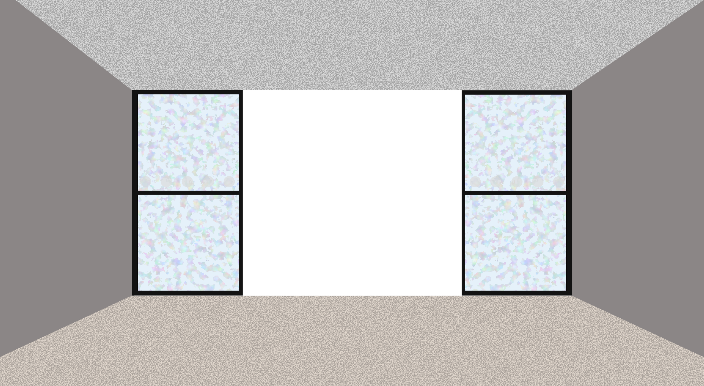
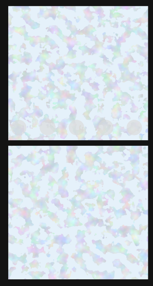
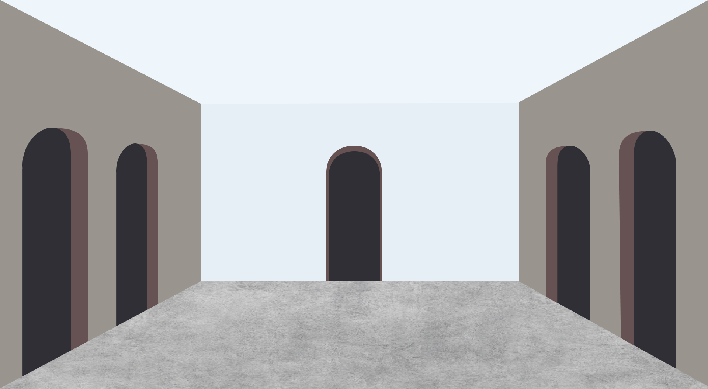

Velkommen til Robotmuseet! Mitt navn er Milo og jeg skal veilede deg gjennom denne spennende og kunnskapsrike reisen om oss roboter!
Klikk på snakkeboblen min for å fortsette.
Hovre over rommene for å se hvor du kan gå! Vi har også en liten guidebok spredt over gulvene der du kan gå til det neste anbefalte rommet. Vi har en på gulvet her også om du ikke vet hvor du skal starte!
Du kan når som helst gå tilbake til dette hovedrommet ved å klikke på en blå "MAIN" som henger på alle rommene! Om du føler deg ferdig med omvisningen, kan du også gå til utgangen ved å klikke på en grønn "EXIT" knapp. Jeg dømmer ikke!
